Hardware & Physics of Quantum Computers#
Warning
These lecture notes are a work in progress and are not a replacement for watching the lecture video, it’s intended to be a supplementary reading after watching the lecture.
Learning outcomes
In this lecture we will try to understand the requirements for a useful quantum computer, learn the similarities and differences between several quantum computing modalities, both Gate-based and analogue, to understand the effect of noise on these computers, and to discuss the advantages and limitations of quantum computing hardware and software simulators.
Understand the requirements for a useful quantum computer
Learn similarities and differences between several quantum computing modalities, both gate-based and analog
Understand the effect of noise on quantum computers
Discuss the advantages and limitations of quantum computing hardware and software simulators
Introduction#
Building a Quantum Computer, requires significant planning and strategy in terms of choosing the scientific pathway, well before other elements of industry are brought in, such as finance, availability of resource etc.
We will just touch upon the common modalities that have yielded success, and the challenges they come with. We start by DiVincenso’s Criteria to define what qualifies as a quantum computer, and then go on to explore some of the technologies and how they are implemented.
We also address the errors that are introduced due to noise in quantum system, and elaborate on how they affect the outcome of quantum computing, along with available methods to address them.
DiVincenzo’s Criteria#
David P. DiVincenzo was a prominant American theoretical physicist and one of the foundational figure in quantum information research. In 1999/2000 he laid out the physical requirements a platform must satisfy to be a viable quantum computer.
A scalable physical system with well-characterized qubits — the Hilbert space must have two well-defined, distinguishable states per qubit
Ability to initialize the qubits to a simple state, e.g. \(\ket{00\ldots0}\)
Long decoherence times, qubit lifetime much longer than the gate operation time
A “universal” set of quantum gates — enough single- and two-qubit gates to approximate any unitary
A qubit-specific measurement capability — read out individual qubits without destroying the rest of the computation
Definition
Decoherence is the process by which a quantum system loses its quantum properties due to interaction with the environment.
Decoherence time is how long a qubit can maintain its quantum state before decoherence occurs.
Key Features of Quantum Physics#
We have discussed this in previous lectures, but its neverthless a good idea to recall: Quantum computers are built from physical systems which are so small that they are governed by the rules of quantum mechanics -
Superposition — a qubit can occupy \(\alpha\ket{0} + \beta\ket{1}\), not just \(\ket{0}\) or \(\ket{1}\)
Entanglement — correlations between qubits with no classical analog, the resource behind quantum speedups
Interference — amplitudes combine constructively/destructively; algorithms are designed to interfere towards the correct answer
Measurement & collapse — observing a qubit projects it onto an eigenstate, irreversibly destroying superposition
No-cloning theorem — an unknown quantum state cannot be copied exactly, which shapes how error correction and communication protocols must work
Together, these features are simultaneously the source of quantum advantage and the source of the engineering difficulty in building hardware.
Quantum Computing Hardware#
Gate-based vs Analog Quantum Computing#
Gate-based#
Computation is built from a sequence of discrete quantum gates
Gates implement unitary operations such as \(X\), \(H\), or \(CNOT\)
The quantum circuit specifies which operations to apply and in what order
General-purpose: can implement arbitrary quantum algorithms
Analog#
Computation is performed by continuous evolution of the quantum system in time
The problem is encoded within the dynamics of the system, and the solution is read out after evolution
Physical parameters control the interactions and energy landscape
Particularly suited to quantum simulation and optimisation
Key Idea
Gate-based computing programs a quantum system by specifying gates; analog computing programs it by specifying a time-evolution.
Gate-based quantum computing#
Different physical systems can be used to build gate-based quantum computers.
The qubit technology determines how we control, couple and read out the qubits.
Modality |
Qubit |
Example companies |
|---|---|---|
Superconducting ⭐ |
Microwave circuits / Josephson junctions |
IBM, Google, Rigetti, IQM, Alice & Bob |
Trapped ions ⭐ |
Internal states of trapped ions |
IonQ, Quantinuum, AQT |
Photonic ⭐ |
Properties of single photons |
PsiQuantum, Xanadu, Quandela |
Silicon spin |
Electron spins in silicon quantum dots |
Equal1, Quobly, Intel, Diraq |
Neutral atoms |
Atomic ground / Rydberg states |
QuEra, Pasqal, Atom Computing |
Topological |
Topologically protected states |
Microsoft |
The modalities marked with ⭐ are the ones we explore in more detail below.
Performance Metrics#
Following are the key metrics one uses to compare different gate-based quantum computers:
Scalability : Ability to increase the number of qubits
Operating temperature : At what temperature do we require to maintain the qubits?
Coherence Times : How long do the qubits stay in a given state?
Fidelity : A measure of “closeness” of the actual qubit state in comparison to the ideal state.
Gate Operation times : How long does it take to act a particular gate on a given qubit.
Quantum Volume : A composite metric that aims to combine all the metrics above into one.
Superconducting Qubits#
Electrical circuit containing a Josephson junction cooled to very low temperatures resulting in superconductivity.
Ground state and first excited state of circuit energy levels form a qubit.
Most common variant: transmon, insensitive to charge noise.
Tip
Superconductivity: certain materials exhibit zero electrical resistance and expel magnetic fields when cooled below a critical temperature.
Josephson junction: consists of two superconductors separated by a thin insulating barrier, allowing electrons to pass through via quantum tunneling.

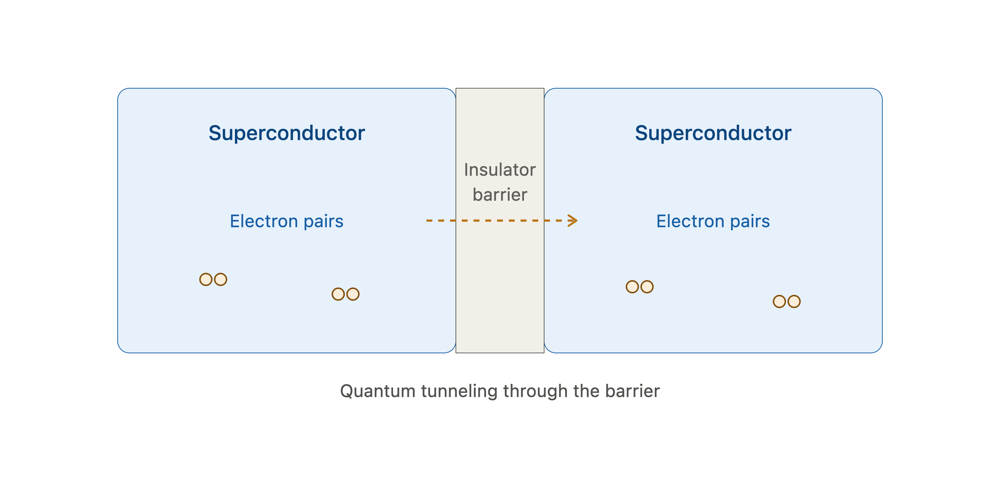
Consider the electrical circuit on the left in the diagram below. Its energy levels are approximately equally spaced. Adding a Josephson junction (right hand side of image) separates the lowest two levels from the higher levels. The ground state and first excited state can then be used as the qubit states:

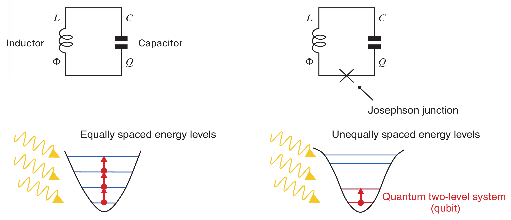
Control and readout via microwave pulses delivered through waveguides / resonators.
Require extremely low temperatures (~10–20 mK) to keep thermal excitations below the qubit energy gap.
Two-qubit gates via tunable couplers between neighbouring qubits.
Connectivity is typically nearest-neighbour.
Gate times are fast (tens of ns), but coherence times are comparatively short (~100 μs).
Most widely used quantum computing platform today.
Companies: IBM, Google, Rigetti, IQM, Alice & Bob.

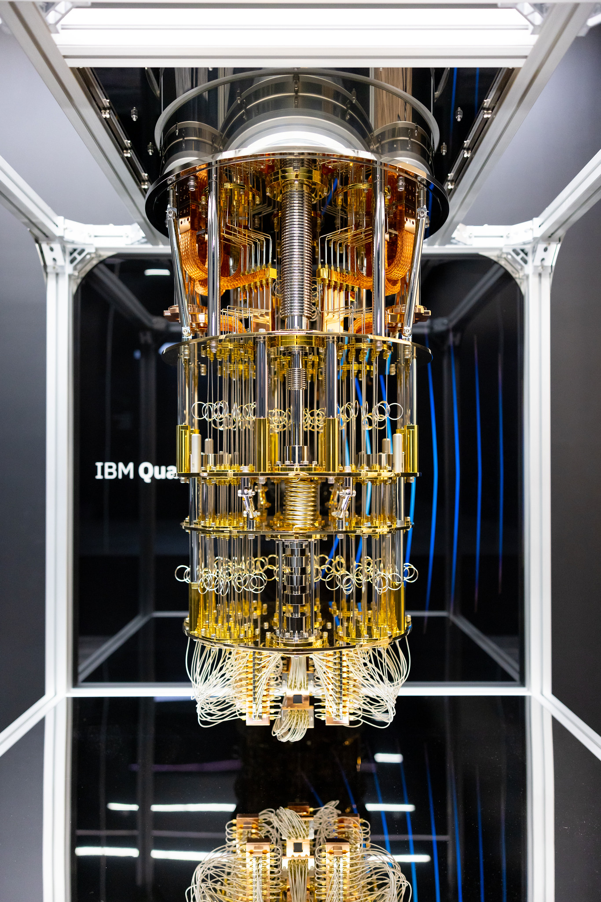
Fig. 36 IBM Quantum System One, as installed at Shin-Kawaski for the University of Tokyo. Photo: IBM Research, CC BY-ND 2.0#
Pros and cons of superconducting qubits#
✅ Advantages#
Fast gates: tens of nanoseconds, so many operations fit within the coherence time.
Mature fabrication: built with lithographic techniques borrowed from the semiconductor industry, so chips can be mass-produced and designed flexibly.
Tunable couplers and allow engineering of qubit interactions.
Most developed ecosystem: largest industry investment, cloud access, and the most advanced qubit counts among gate-based platforms.
Compatible with microwave control electronics, and readout is fast.
❌ Challenges#
Extreme cryogenics: dilution refrigerators at ~10–20 mK, which are expensive and limit how much hardware fits inside.
Short coherence times (~100 μs) compared with ions.
Nearest-neighbour connectivity means extra SWAP gates for distant qubits, adding depth and errors.
Crosstalk and fabrication variability: qubit frequencies differ between devices, and material defects add noise.
Wiring bottleneck: every qubit needs control lines running from room temperature down to the chip.
Trapped Ions#
Qubits encoded in internal electronic states of ions in a Paul trap, which uses oscillating electromagnetic fields to confine charged ions in a small region of space.
The ions are kept in an ultra-high vacuum so that collisions with surrounding particles do not disturb the quantum states.
Ions are laser-cooled to their motional ground state and arranged in a chain or 2D array.
Single-qubit gates: laser/microwave pulses applied to individual ions.
Two-qubit gates: mediated through the ions’ shared collective motion. This gives trapped-ion systems a major connectivity advantage: ions in the same trap do not have to be physically adjacent to interact.
All-to-all connectivity within a trap: any ion can be entangled with any other.
Very long coherence times (seconds) and high gate fidelities.
Slower gates than superconducting qubits (μs range), and scaling requires interconnects between traps.
Companies: IonQ, Quantinuum, Alpine Quantum Technologies.

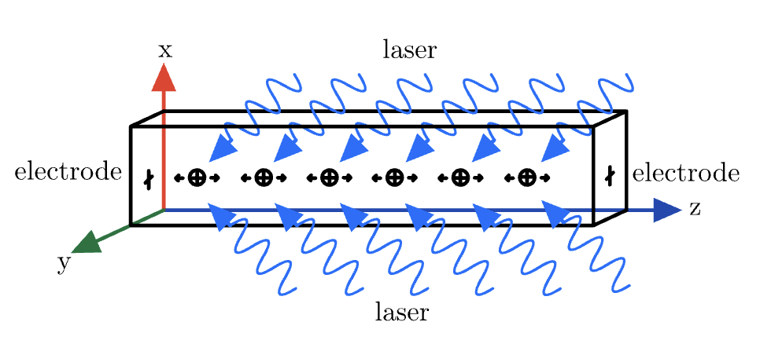
Pros and cons of trapped ions#
✅ Advantages#
Very long coherence times: seconds or longer, far beyond superconducting qubits.
Highest gate fidelities demonstrated of any platform.
All-to-all connectivity within a trap, so no SWAP overhead.
Identical qubits: every ion of a given species is the same, so there is no fabrication variability.
High-fidelity readout of measurement outcomes.
❌ Challenges#
Slow gates: microseconds to milliseconds, so deep circuits take a long time to run.
Scaling: long ion chains need ion shuttling between zones or photonic links between traps.
Complex laser systems: precise, stable optical control of individual ions is demanding.
Ultra-high vacuum and trap engineering add hardware complexity.
Lower clock speed limits throughput for algorithms needing many repeated runs.
Photonics#
What is a photon?
Einstein proposed in 1905 that light is composed of discrete packets of energy which we now call photons. Each photon carries energy \(E=hf\), where \(h\) is Planck’s constant and \(f\) is the frequency (colour) of the light.
A photonic quantum computer can be thought of as a pipeline:
single-photon source → optical circuit → photon detectors
The quantum processing can largely take place at room temperature, while the source and detector components may require cooling. This is one reason photonics can avoid the large dilution refrigerators required by superconducting processors.
Photonic quantum computers encode quantum information in properties of single photons. Unlike light from an ordinary lamp, which contains an enormous number of photons, a quantum photonic processor needs controlled single-photon sources.
Qubits encoded in properties of single photons.
Manipulated using linear optical elements: beam splitters, phase shifters, waveguides.
Universal computation is possible with linear optics, single-photon sources, and measurement-based feedforward (where an earlier measurement result determines a later operation).
Photonic integrated circuits fit all optical components on a chip, enabling scaling.
Companies: PsiQuantum, Xanadu, Quandela.

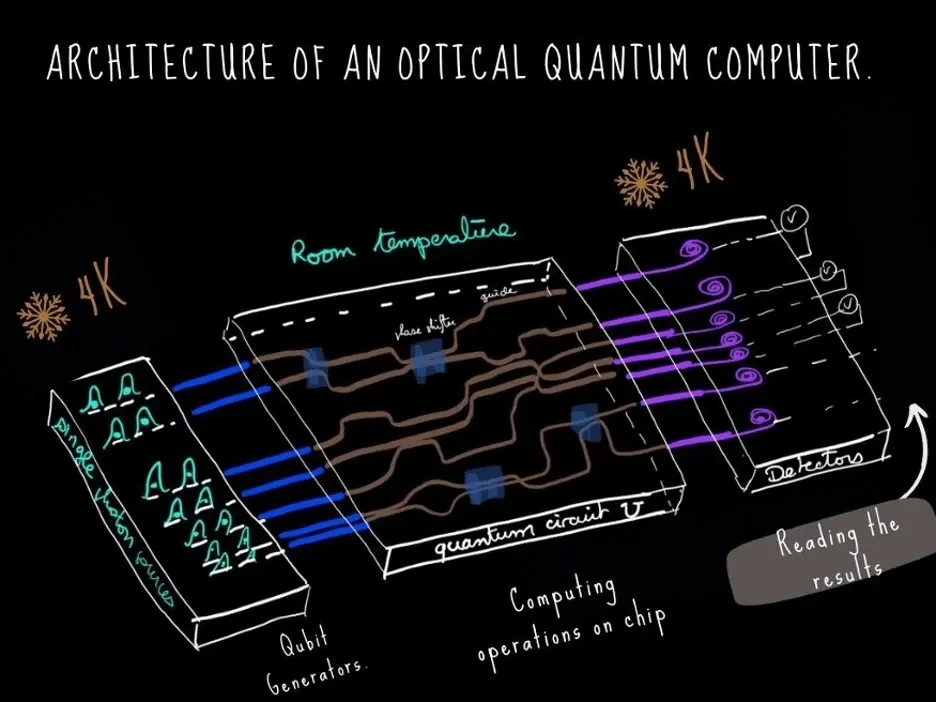
Fig. 37 https://www.quandela.com/resources/blog/what-is-a-quantum-computer/#
Encoding qubits with photons#
There are several ways to encode a qubit in a photon. The important point is that the logical states \(\lvert0\rangle\) and \(\lvert1\rangle\) are represented by two distinguishable physical states.
Polarization |
Dual rail |
Time-bin |
|
|---|---|---|---|
\(\lvert0\rangle\) |
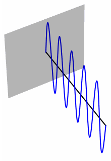 |
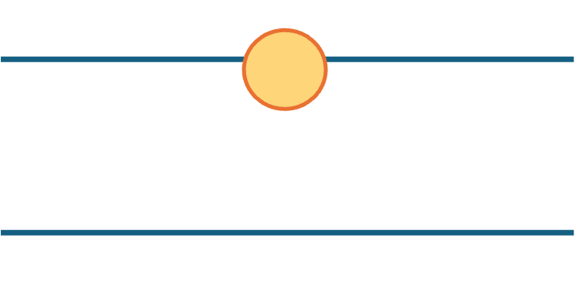 |
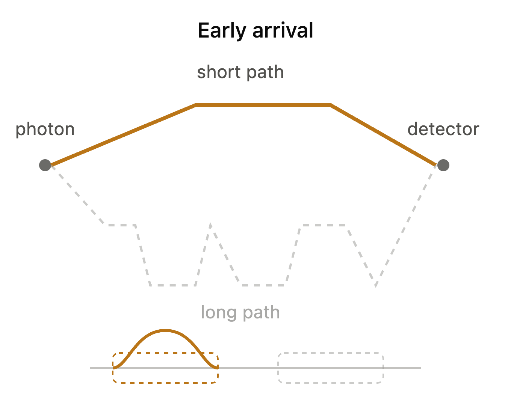 |
\(\lvert1\rangle\) |
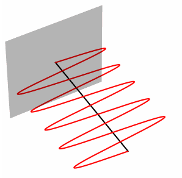 |
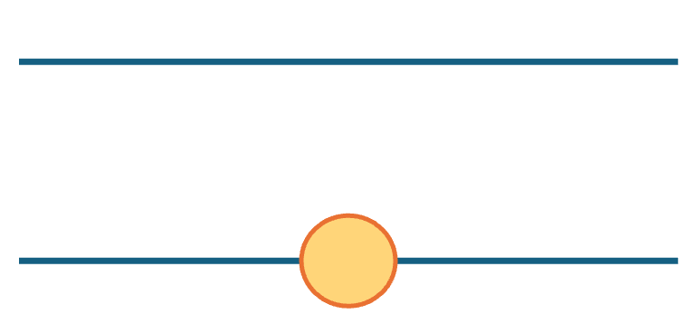 |
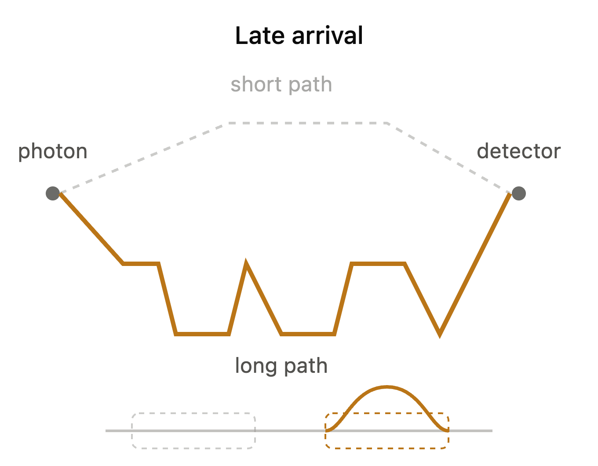 |
Polarization encoding: uses the polarization (direction of oscillation) of the photon’s electric field. For example, vertical polarization represents \(|0\rangle\) and horizontal polarization represents \(|1\rangle\).
Dual-rail encoding: uses two optical paths. A photon in the upper path and no photon in the lower path represents \(|0\rangle\); the opposite configuration represents \(|1\rangle\).
Time-bin encoding: uses the arrival time of the photon. A photon taking a short optical path arrives earlier and represents \(|0\rangle\), while a photon taking a longer path arrives later and represents \(|1\rangle\).
Pros and cons of photonics#
✅ Advantages#
Room temperature operation — refrigerators only needed for single-photon sources and detectors.
Low decoherence: photons barely interact with the environment, preserving coherence over long distances.
Naturally suited to networking and communication — photons are the native carrier for quantum links between nodes.
Existing telecom infrastructure (fibre, integrated photonics) can be leveraged.
High potential clock speeds, since photons travel at the speed of light.
❌ Challenges#
Deterministic single-photon sources are hard to engineer — most sources are probabilistic.
Photon loss accumulates with circuit depth and distance, limiting scalability.
Two-photon gates are inherently probabilistic (no direct photon-photon interaction)
Detector inefficiency further compounds loss: photon-number-resolving detectors are difficult to build and operate.
Requires many auxiliary photons and fast feed-forward electronics to reach fault tolerance.
Comparison#
Superconducting |
Trapped Ion |
Photonic |
|
|---|---|---|---|
Qubit |
Josephson junction |
Ion internal states |
Photon |
Connectivity |
Nearest-neighbour |
All-to-all |
Reconfigurable via optics |
Gate speed |
~10–100 ns (fast) |
~1–100 μs (slower) |
Very fast, but probabilistic |
Coherence time |
~100 μs |
Seconds (very long) |
~1ms (long) |
Temperature |
~10–20 mK |
Room temp (ions laser-cooled) |
Room temp |
Main advantage |
Fast gates, mature ecosystem |
All-to-all connectivity |
Low decoherence |
Main challenge |
Decoherence, crosstalk |
Scaling / shuttling, slower gates |
Deterministic sources, photon loss |
Companies |
IBM, Google, Rigetti, IQM, Alice&Bob |
IonQ, Quantinuum, AQT |
PsiQuantum, Xanadu, Quandela |
Analog Quantum Computing#
What is a Hamiltonian?#
The Hamiltonian \(H\) is the operator associated with the total energy of a system.
It determines how the system evolves in time, through the Schrödinger equation:
\(\hbar\) is the reduced Planck’s constant
\(\frac{d}{dt}\) denotes the time derivative — how the quantum state changes with time.
The eigenstates of \(H\) have energies \(E_n\):
Ground state - definition
The ground state of a quantum system is the eigenstate with the lowest energy.
In the figure below, the eigenstates of Hydrogen atom are illustrated as circular orbitals with labels \(n=1,2,3,...\).

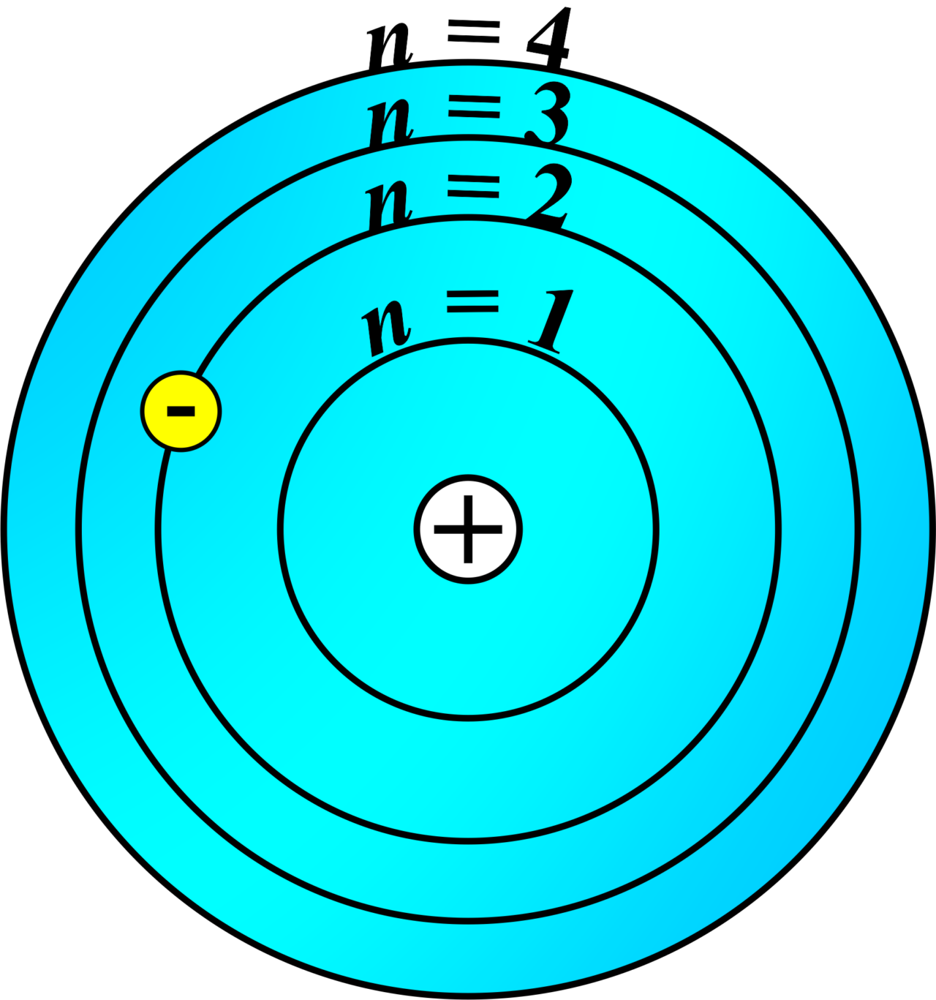
Their actual energies are plotted below -

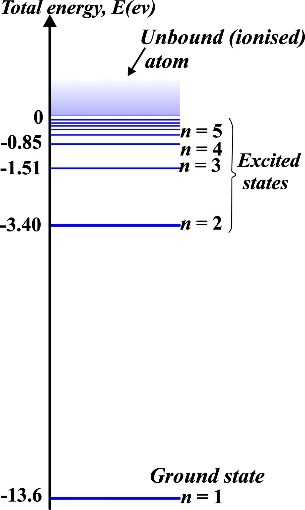
source: https://unifyphysics.com/bohr-model-of-hydrogen-atom/
Time-evolution#
\(\lvert\psi(t)\rangle\) is the state of the system at time \(t\), given the starting state \(\lvert\psi(0)\rangle\).
For a time-independent \(H\), the Schrödinger equation is solved by:
The evolution operator \(U(t)\) is unitary: \(U^\dagger U = I\)
Total probability stays equal to 1 (the state stays normalised)
Evolution is reversible: \(U^{-1} = U^\dagger\)
Quantum gates are unitaries too, so analog evolution under \(H\) is one long, continuous “gate”
Eigenstates are stationary
If the system starts in an eigenstate \(\lvert E_n\rangle\) of \(H\):
Remember \(H\lvert E_n\rangle = E_n\lvert E_n\rangle\), so
The state only picks up a phase; measurement probabilities never change.
Hence eigenstates are known as stationary states of the Hamiltonian
Hamiltonian Example#
For a qubit, a simple Hamiltonian might combine an energy splitting with a driving term, e.g.
where \(Z\) and \(X\) are the Pauli operators:
Here, \(\Delta\) sets the energy splitting and \(\Omega\) controls the strength of the drive.
In gate-based quantum computing, carefully engineered interactions are used to implement short, discrete unitary gates.
In analog quantum computing, the Hamiltonian itself is the program: physical parameters such as detuning \(\Delta\) and coupling \(\Omega\) are controlled continuously, and the system evolves under the resulting Hamiltonian to perform the computation.
Analog Quantum Computing#
Type of analog computing |
Physical implementation |
Applications |
Companies |
|---|---|---|---|
Neutral-atom computing |
Rydberg platforms |
Quantum simulation — e.g. Bose–Hubbard and Ising models |
Pasqal, QuEra |
Quantum annealing |
Superconducting qubits |
Combinatorial optimisation — e.g. Max-Cut, travelling salesman |
D-Wave |
Neutral-atom platforms:
Atoms arranged in array, evolved under a Hamiltonian which encodes the problem
Quantum annealers:
Evolve system slowly from an easy initial Hamiltonian to a problem Hamiltonian
Aiming to remain in the ground state (this encodes the solution)
Analog vs gate-based trade-off
Analog systems can reach very large qubit counts and natively simulate certain physics
But offer less fine-grained general-purpose control and less researched error-correction schemes
Rydberg Platforms#
Rydberg atoms are neutral atoms which possess a ground state and a highly-excited Rydberg state, which can be used to encode a qubit.
These atoms can be arranged in an array and controlled using lasers

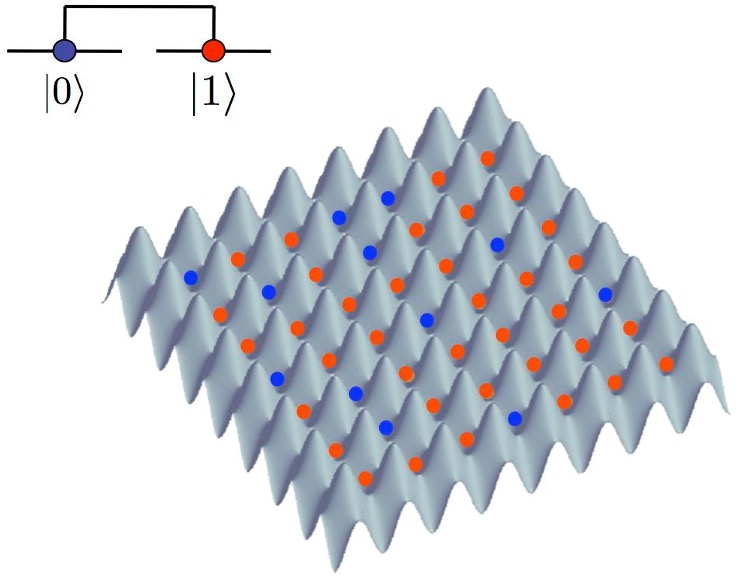
Useful for problems which map to the Rydberg Hamiltonian, which may be time-dependent:
Simulating the dynamics of a many-body system on a classical computer generally becomes exponentially costly with system size.
Rydberg platforms can directly realise the Hamiltonian dynamics in a physical quantum system.
Quantum Annealers#
Not universal quantum computers
Particularly suited for solving combinatorial optimization problems:
Graph problems: Max-Cut, graph colouring
Finance: portfolio optimisation
Machine learning, scientific computing, scheduling, routing

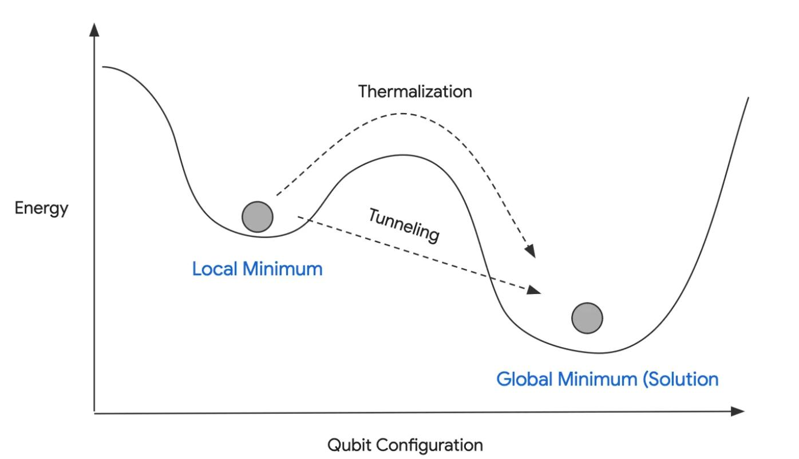
Fig. 38 https://medium.com/%40deltorobarba/the-many-worlds-of-quantum-inspired-cd608cb9a7d2#
The idea behind quantum annealing can be visualised as an energy landscape. The desired solution corresponds to a low-energy configuration, ideally the global minimum. Classical optimisation may have to cross an energy barrier to move between configurations, whereas quantum tunnelling can provide another route between regions of the landscape.
Example: D-Wave Advantage
5000+ qubits, but is not fault-tolerant and cannot run arbitrary quantum algorithms.
Designed to solve problems that can be mapped to a specific type of Hamiltonian (Ising model or QUBO).
Finds low-energy configurations of the Hamiltonian, which correspond to optimal or near-optimal solutions to the original problem.

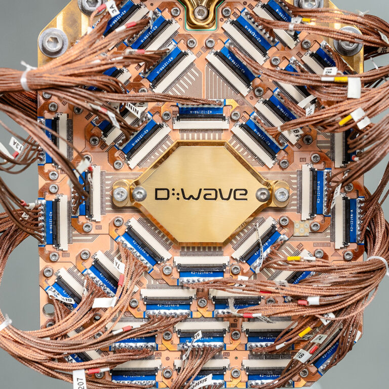
Photo credit: D-Wave Quantum Inc.
Noise#
Errors in quantum circuits#
State prep error |
Gate error |
Crosstalk |
Readout error |
|---|---|---|---|
initial state ↓ |
over/under-rotation ↓ |
gates disturb neighbours ↓ |
↓ measurement |
Decoherence accumulates over the full circuit duration →
Errors in quantum circuits#
State preparation errors — the initial state is not perfectly prepared
Gate errors — imperfect physical implementation (control pulses/laser timing) leads to over/under-rotation, systematic or random
Crosstalk — operations on one qubit unintentionally affect neighbouring qubits
Decoherence — unwanted interaction with the environment degrades quantum information
\(T_1\) (relaxation time): timescale for energy loss, \(\ket{1}\to\ket{0}\)
\(T_2\) (dephasing time): timescale for loss of phase coherence between \(\ket{0}\) and \(\ket{1}\)
Readout errors — measurement outcomes are misassigned (e.g. a \(\ket{1}\) read as \(\ket{0}\))
Note
These error sources are why today’s devices are called NISQ (Noisy Intermediate-Scale Quantum) machines, and why quantum error correction / error mitigation is central to reaching fault-tolerant quantum computing.
Types of Quantum Errors#
1. Bit-flip error (X error)#
\(\ket{0} \leftrightarrow \ket{1}\;\) :
Analogous to a classical bit flip; caused e.g. by unwanted energy exchange with the environment.
2. Phase-flip error (Z error)#
Relative phase between \(\ket{0}\) and \(\ket{1}\) is flipped:
Has no classical analog; the dominant error from dephasing.
3. Bit-phase-flip error (Y error)#
Combination of both \(X\) and \(Z\) errors
Tip
Any single-qubit error can be written as a combination of \(X\), \(Y\), \(Z\) — the Pauli operators
Therefore correcting bit- and phase-flips is sufficient to correct arbitrary small errors
Tackling Noise#
Cooling / isolation
Thermal fluctuations adversely impact the performance of quantum computers
At lower temperatures, we can keep the thermal energy lower than the energy gap between qubit states, reducing unwanted excitations.
How cold?
Very! In some cases colder than deep space (~2K or -271\(^\circ\)C). For example:
Superconducting qubits: ~10–20mK (~ -273\(^\circ\)C) using dilution refrigerator
Trapped ions: overall apparatus room temperature, but ions laser-cooled to near motional ground state (~μK)
Techniques
Helium dilution refrigeration
Laser cooling

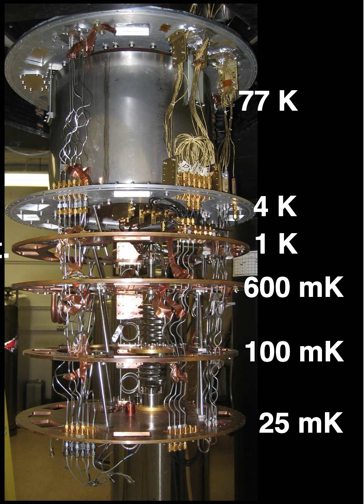
Fig. 39 source: https://web.physics.ucsb.edu/~martinisgroup/theses/Bialczak2011.pdf#
Classical 3-Bit Repetition Code#
Bit-Flip Error Protection
3-bit repetition code: Encode a single bit as three copies (\(0 \to 000\), \(1 \to 111\))
Decoding: Take a majority vote of the three bits to recover the original bit
Capability: Detects and corrects a single bit-flip error (fails if \(\ge 2\) bits flip)
Suppose a single bit-flip error occurs during transmission:
Scenario |
Input Bit |
Encoded |
Received |
Decoded / Output |
Result |
|---|---|---|---|---|---|
Without Encoding |
\(0\) |
\(0\) |
\(1\) |
\(1\) |
❌ Uncorrected |
Without Encoding |
\(1\) |
\(1\) |
\(0\) |
\(0\) |
❌ Uncorrected |
3-Bit Repetition |
\(0\) |
\(000\) |
\(100\) |
\(0\) (Majority Vote) |
✅ Corrected |
3-Bit Repetition |
\(1\) |
\(111\) |
\(101\) |
\(1\) (Majority Vote) |
✅ Corrected |
Quantum error-correcting codes face two extra challenges
No-cloning theorem prevents simple state duplication
Noise complexity: Quantum noise includes both bit-flips (\(X\)) and phase-flips (\(Z\))
Quantum error correction#
Encode logical qubits into multiple physical qubits, detect and correct errors without measuring the quantum information directly
Bit-flip code:
Encode \(\ket{0}_L=\ket{000}\), \(\ket{1}_L=\ket{111}\)
Detect a single \(X\) error
Phase-flip code:
Encode in the \(\ket{+},\ket{-}\) basis
\(\ket{0}_L=\ket{+++}\), \(\ket{1}_L=\ket{---}\)
Detect a \(Z\) error the same way, after a basis change. A phase flip in the computational basis can be treated like a bit flip in the appropriate rotated basis. This lets the same basic redundancy idea be used to protect against a different type of quantum error.
Shor code: concatenates the two (9 physical qubits per logical qubit) to correct an arbitrary single-qubit error (\(X\), \(Y\), or \(Z\)) since a \(Y\) error is a combination of \(X\) and \(Z\)
Modern devices mostly use the surface code, which extends bit-flip/phase-flip protection to a 2D lattice
Error mitigation
We can also use post-processing techniques to reduce the effect of noise on final measurements
Quantum Computing Hardware vs Simulators#
Executing Programs on Quantum Hardware#
Advantages#
Runs on real quantum hardware, not an approximation.
Validates algorithms under actual noise and constraints.
Only way to reach quantum advantage at scale.
Accesses qubit counts beyond what simulators can handle.
Disadvantages#
Subject to noise and decoherence.
Limited connectivity and coherence times.
Queue times and limited hardware access.
Results often need error mitigation.
QC Hardware vs Software Simulators#
A software simulator represents the quantum state and operations using a classical computer. This makes simulation extremely useful for development and debugging, but the classical resources required can grow exponentially with the number of qubits.
For a general \(n\)-qubit statevector, the state is described by \(2^n\) complex amplitudes. Consequently, increasing the number of simulated qubits quickly increases memory and computational requirements.
Simulators also provide a major debugging advantage. On real quantum hardware, inserting measurements in the middle of a computation can disturb or destroy the quantum state being used by the algorithm. In a simulator, intermediate states can be inspected without physically disturbing a quantum system.
Another important distinction is noise. Real hardware has unavoidable physical noise. In a simulator, noise can be switched off, added deliberately, or varied to study its effect. This makes simulators useful for understanding and improving algorithms before they are run on hardware.
Quantum Computing Hardware |
Quantum Computing Software Simulators |
|
|---|---|---|
Comparison to reality |
Actual qubits |
Software objects mimicking qubits |
Quantum entanglement and superposition |
Simulated quantum behavior |
|
Classical backends, heavy on resources |
||
Noise |
Inherently exists, need to employ error mitigation/correction |
Controllable |
Helps understand & improve real QC |
||
Cost |
Very expensive |
Mostly free & open source |
Require heavy maintenance |
Easily setup on laptop/desktops/servers |
|
Access and Control |
Very limited public access |
Widely accessible, easy to install |
You can’t really debug on QC |
Debug, analyze, develop easily |
|
Little control on runtime |
||
Scalability |
Limited qubits |
Due to classical backends, actual computation cost grows exponentially |
Future research will open new possibilities |
Summary#
There are two broad categories of quantum computers:
flowchart LR
A["Quantum Computing Hardware"]
A --> B["Gate-based"]
A --> C["Analog"]
B --> B1["Discrete quantum gates"]
C --> C1["Continuous tunable dynamics"]
Different physical modalities have different strengths and weaknesses, and no single modality dominates across all performance metrics.
Noise is a major challenge for current quantum computers, causing errors in state preparation, gate operations, and readout.
Quantum software simulators replicate the behavior of quantum computers on classical hardware, but are limited in scale and do not capture all real-world noise effects.